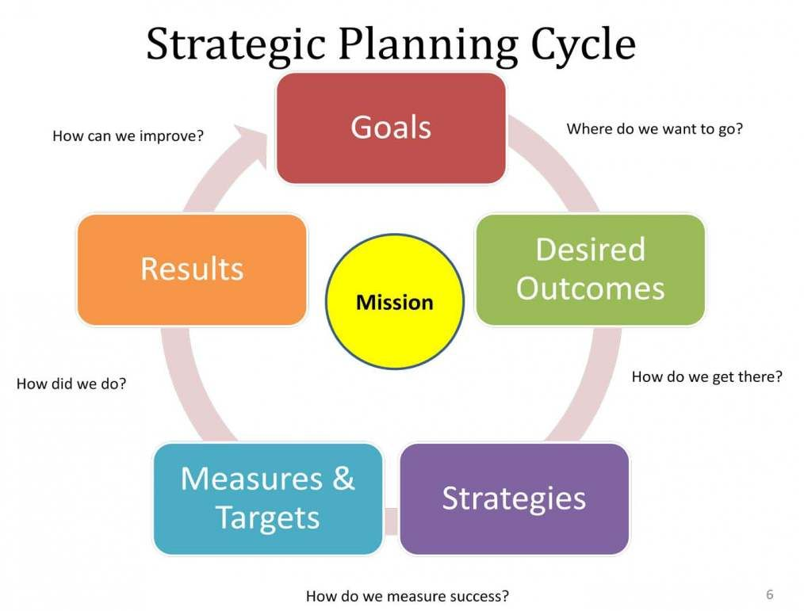

A stupid diagram which I have made small for obvious reasons.The Mandarin asked me to provide a summary answer to this question:
What is the appropriate level of the use of consultants in the public service? Has it gone too far? Are consultants doing too much core/routine work or are they providing a vital service?
It's a fair enough question, but rather too decontextualised for me to make much sense of it really – but I didn't think the Mandarin wanted my musings on that, so I offered them what's below the fold. My main point is really on contracting out in the first two paragraphs rather than consulting per se.
One can distinguish between using consultants to inform one’s strategic thinking and outsourcing routine work. Outsourcing the latter can make sense. But I recall a moment of epiphany when the Productivity Commission was being asked to report on what human services could be made more competitive. They proceeded to go about their business as someone trained in economics would, by exploring the characteristics of different sectors, such as how competitive a sector could be made and the extent to which consumers might be well informed and capable of choosing the best services for them. These were sensible questions to ask. But since the government was funding these services, they were not normal markets. So, it seemed to me that a more fundamental question was the extent to which those responsible for running these services understood what they were doing. Did they have arrangements in place so that, as they changed arrangements, they (and ideally the wider world) would know whether things were improving or getting worse as a result? The thing is, if the agency can’t answer those questions, it doesn’t answer the question of whether it should insource or outsource the work. It answers a different and prior question. Which is whether the agency knows what it’s doing. As for outsourcing higher level ‘strategic’ thinking to consultants, I’m a sceptic. They’re less invested in their clients’ success than insiders. They have little corporate memory (though this is offset, or even outweighed, by their ability to generalise from experience in other organisations). But the biggest problem is the way in which their output is ‘productised’ and sold. The way consultants make money is by developing some new system which seems appealing and then selling variants of it to one organisation after another. So they sell fads. And because they’re in sales mode, they’re not alive to the downsides of those fads. An exception would be where the strategic thinking is supposed to be being provided by independent outsiders. My experience of being such an outsider is that one often needs some high quality analytical and critical skills working alongside the agency’s team to get the best result.
Would agree with this. Outsourcing on anything, if you can't write the TOR and you can't assess whether that TOR has been adequately fulfilled, you're in trouble. And if you can't do this with respect to strategy, maybe you're in the wrong business.
I've had one close up experience of being supported by a team from one of the very large management consultancies on strategy development. They were useful to a degree in that their networks of connections provided a wide range of inputs from across the industry. However they didn't really have the first grasp of our industry and so weren't able to assess what they were hearing. And so it took inordinate patience and months of work to turn their consulting output into something relevant and meaningful we could take to decision makers and apply. Which sounds like your final paragraph.
The same work could have been done in half the time if similar FTE from experienced insiders had been able to down tools on everyday issues and focus on the task. But then the recommendations on strategy wouldn't have gone to the board within the imprimatur of the involvement of said management consultants. Nor with their admitted amazing skill in taking relatively straightforward conclusions and dressing them up into heinously complex and therefore more Board-persuasive powerpoint decks.
If you are going to outsource an activity it becomes doubly important that you don't outsource the policing or auditing of its performance to a for-profit company. There are too many conflicts of interest. The auditor wants repeat business, so is conflicted if a bad report is given. He may get a reputation for being 'hard to get on with', which could lead to less business. It also needs to be competitive. Can it cut costs and still meet requirements with phone auditing of paperwork rather than random visits? Can they use cheaper, but less knowledgeable people or will they use auditors/inspectors who know the field well enough to spot issues? With a bad report the auditor may make an enemy of the company. Such messengers do get shot.
Thanks Zilla and David
I was a bit hesitant to post what I did just because it was so skimpy – just a response to a question embodying the one thing I thought I had to offer which was the 'knowing what you're doing point'. I was at sea on the wider question of consultants.
Reflecting on that now, that's because I hadn't found a secure place to stand to do the analysis as it were. I'm still not sure I have, but this has helped. For instance, to respond to zilla's question, I'm not sure I agree.
Here are some propositions in response.
* An agency's management will, if it is good, want highly skilled and intelligent staff.
* In the public sector they are weighed down by time-servers and people who are playing the game according to the incentives they are exposed to – which comes down to the fairly single-minded pursuit of promotion.
* Of course, they'd rather do a good job than a bad one, but it's a question of the relative importance given to each.
* At the same time, if the agency is tolerably led, over time it should build up expertise and good people with corporate memory.
* Within consultancy the workforce isn't that different – though it's often younger and without the time-servers.
* Consultancies themselves are highly geared to flattering their clients and to making their inputs experty (by analogy with truthy and mathy).
* In principle good management in the client agency should be able to countermand/counteract a fair bit of this and simply use the consultant's personnel in roles that improve their operations. It was this sense I was appealing to when I said when I've been running inquiries, I'd have liked to get in some good people from outside – often one is simply given a team comprising those in the agency who are at a loose end.
* A lot of the problem with consultants comes directly from the 'accountability theatre' involved – at a range of different levels I won't go into here.
* Your proposed test – can it all be written in the Terms of reference. I'm not sure I buy it. It seems to me that these are inherently areas where it's inevitable that one can only specify things in contracts to a very limited degree.
Most of the time NONE of these things are acknowledged in trying to think about the issue.
David "policing or auditing of a consultant's performance" is very much into the accountability theatre. It might make sense. I think in the existing market it does, but I still think a lot of it will be honoured in the breach.
Essentially neither the system of cultural incentives in the public service and the financial and cultural ones in consulting are well oriented around the one thing you need which is the reward of people for working dependably and insightfully on problems on their merits, rather than all kinds of alternative role-plays. I'm not sure I can come up with any great corporate structures to fix this. I might take a leaf out of the Northern European's book. They just have high standards of professionals and then try to set up systems where they are trying to do a good job – if you put your faith in accountability mechanisms for promotion, reward and audit, you might just be bound to be disappointed – as education systems like ours have been compared with education systems that are not mesmerised by one-size-fits-all accountability through instruments like NAPLAN.
But that isn't a particularly crisp and crunchy conclusion, and isn't one that will get you through a TV interview full of gottcha questions from a 'hard hitting' journo.
As a student I published a piece on the three things consultants do: i) provide specialist skills that the organisation seldom needs and hence would not find it worthwhile to generate themselves, ii) as a means of a hierarchy to talk to those within the organisation who already have the answers but whom managers cannot openly consult without losing face to others in management, iii) as a means of pretending to inside stakeholders that something they wanted to do is suggested by outsiders. I would now add iv) to provide specialist skills that management does not want inside the organisation because it would make management vulnerable to true accountability.
Now, i) is a good reason to have consultants and ii) to iv) are consequences of a dysfunctional system. That is true whether the client is corporate or public sector.
If I were seriously answering the question posed to you I'd get a random sample of consulting activities and reports and judge for myself which of the four reasons I am looking at. That would be a consulting gig on its own though :-)
Thanks Paul
I think the first three are a very good set of lenses to look at the issue. I can imagine your new fourth reason to occur in the private sector – because you can have a bunch of mates outside in the consulting world. But I'd be surprised if it's all that common in the public sector. After all, the game plan there is usually not too heavily slanted towards doing anything much, or on avoiding accountability in any such focused way, but rather on learning to live with the fact that you have to work with all kinds of people whose heart isn't really in it. Still with paracute exits out of the public sector into consulting, I guess it's got its attractions.
Can't really speak for how it works in the public service, but as an IT consultant to law firms, I get work from them when they don't have in-house expertise in implementing a new system, and don't plan having long term expertise. The trick is handing over knowledge to the key resources that they have and who stay.
IT Consulting is a significant part of the public service consulting costs. It is a sense routine work, but the individuals involved either work for suppliers, or don't want to stay long term in the public service when they can work for themselves and go from project to project.
I do remember getting annoyed when a firm I worked for provided consultants to a Tasmanian government organisation at a high rate, while I left Tasmania because there was no such work. I suspect once the project ended that there still wasn'.t
thx. The fourth reason is connected to a phenomenon I first saw clearly in the Australian public service: deliberate gutting of expertise inside departments and organisations so that ministers would not face internal critique and there would be no-one with the expertise inside the ministry to leak embarrassing information or analyses to the press. Yet, the skills would still now and then be needed, so one hires these potential trouble makers as consultants, better paid but with less ability and desire to be difficult.
I don't know if that also happens in private companies. I guess its well possible because incompetent management might see real expertise as internal competition for top jobs. Better to have them outside than inside.
There is a large element to which the distinction between workers and consultants is increasingly blurred, partially for tax reasons: powerful insiders get their organisations to "hire their services" via one-person firms registered in some tax-haven. It messes up the statistics.